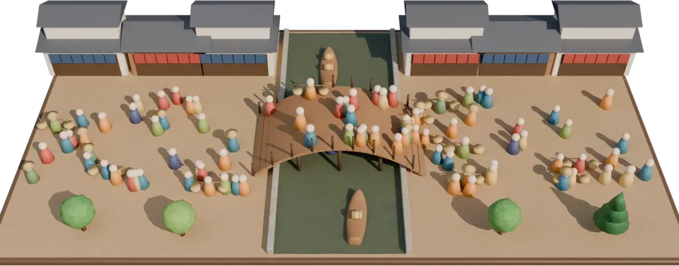

文字の大きさ
第1時江戸のまちのにぎわい
つかむ調べるまとめる
教科書 p.154〜155
学習問題江戸時代には、どのような文化や学問が生まれたのだろう。
この時間のめあて江戸時代の都市は、どのような様子だったのだろう。
この時間のポイント
1にぎわう江戸のまち

江戸のまちのにぎわい（イメージの模型）
江戸幕府が開かれてから200年ほどたったころの江戸の様子が、絵巻にえがかれています。場所・持っているもの・していること・職業の4つの観点で読み取りましょう。
教科書で確かめようp.154〜155 資料ア
23つの大都市
江戸・大阪・京都の人口を、ロンドンやパリとくらべてみましょう。
教科書で確かめようp.155 資料イ
3新しい文化が生まれる
教科書で確かめようp.154〜155 本文
考えてみよう
- 江戸時代の都市は、どのような様子だったのだろう。
- 江戸時代には、どのような文化や学問が生まれたのだろう。予想してみよう。
- 縄文
- 弥生
- 古墳
- 飛鳥
- 奈良
- 平安
- 鎌倉
- 室町
- 安土桃山
- 江戸
- 明治
- 大正
- 昭和
- 平成
- 令和